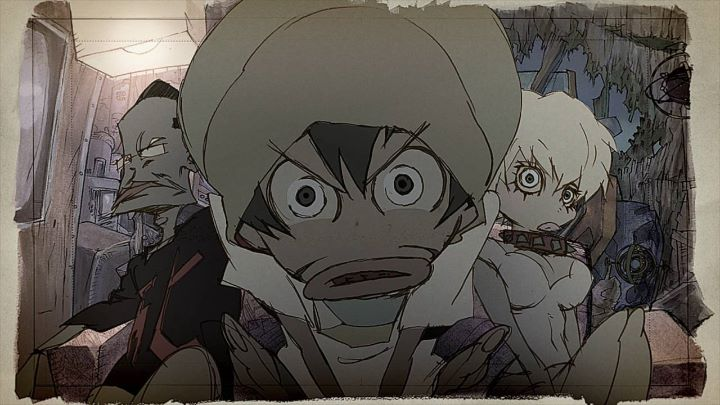

"Genius Party" (and a follow-up movie called "Genius Party Beyond") is an anthology film of shorts from Studio 4C. Animated anthologies are not unusual in Japan, but naturally, they can be difficult to market, with limited appeal to anyone outside the art-house community. Therefore, it's a rare treat when any of them get released outside of Japan. "Genius Party" in particular had a lot of trouble: despite releasing in Australia, and later the UK, and even on online streaming platforms, and despite interviews from the studio that distinctly confirm intention to release it in America, it would take 12 years before a home video release in North America would fruition. That's a long wait! It was ultimately GKIDS that came to the rescue, this being one of several late-licenses in their anime catelog, perhaps due to an unofficial relationship with the UK distributor. In an era where home-vdeo releases are wanning, it was a miracle that we got a chance to see it at all, much like how it is a miracle whenever these anthologies get completed. This particular duo complication has reason to get fans excited. Studio 4C is one of the most distinctive and impressive anime studios in Japan. They rarely release anything (primarily working on feature films), so to have a collection of shorts curated by them is really cool. There's also an impressive array of directors on the list, including Shinichiro Watanabe ("Cowboy Bebop," "Samurai Champloo"), Masaaki Yuasa ("Mind Game," "The Tatami Galaxy"), Mahiro Maeda ("Gankutsuou: The Count of Monte Cristo," "Blue Submarine No. 6"), and others. Not all of the directors were well known in 2007, so it can be fun to look up each one today to see what has become of them, and to try to place the short among their resume. A big factor for me as to how successful a Japanese anthology is, is this: "can it trick me into thinking it's not all from Japan?" I like anime just fine, but both in style and subject matter, Japanese anime can get very similar and repetitive (see another anthology series called "The Animator's Expo"). Impressively, while many of the 12 shorts do look and feel like anime, there are still some that look distinctly different, thanks to different languages (Chinese and Russian, I think, with burned-in Japanese subtitles), different methods (mostly hybrid of 2D and 3D, but sometimes wholy 3D) and styles. I'd say only half of the shorts look like traditional anime, and even anime die-hards should appreciate the break. The quality of the animation, generally, is excellent, although it can vary. A handful of early shorts are most certainly animated by Studio 4C themselves, with incredible action and camera movement. But later shorts look so different from their trademark style, that I wouldn't be surprised in studios like Production I.G., Madhouse or Gonzo were involved, although it's difficult to find evidence. Only one or two shorts stand out as having less-than-average production values. Also, the music and acting consistently felt like an after-thought for every short, not necessarily ruining anything, but definitely noticable.  The stories of each short are also very different from each other. One is about a toddler discovering a tool that makes his drawings come to life, and the alien ships that prepare to kill him. Another is about a Tim Burton-esque town and a zombie-monster's first day at school. Another is an experimental monologue that ponders nothing less than God and the meaning of life. Ranging from 5 to 20 minutes each, I generally had fun not knowing what to expect. With most of the shorts exceeding 15 minutes, I do admit some of the stories felt longer than necessary, so I would recommend not watching both "Genius Party" and "Beyond" in one sitting. You would think that "Beyond," consisting of leftover shorts left out due to time constraints or quality, would be the worse of the two films, but I found it to be just as satisfying.Only 3 of the 12 shorts came across as disappointments to me. "Doorbell" had an interesting premise that didn't really pay off, and it's poor animation made it seem as though it came from a second-rate Korean studio. "Limit Cycle" was a long exposition piece about God, against the backdrop of abstract cybernetic images, and while it looked cool, it didn't really have a point, being too self-indulgent and boring to recommend. And "Dimension Bomb" had a cool premise, but the short felt like a prototype concept piece for a much larger project, the type of thing you would show to investors rather than a stand-alone and complete short. Otherwise, 4 shorts stood out as being particularly memorable. The opening piece, simply titled "Genius Party," is the shortest and arguably best one, an abstract adventure consisting of hearts and skulls and an African tribesman in a bird costume. "Shanghai Dragon" had a fun premise, great animation and some poignant story moments, about the toddler with the alien pen, tasked to use it to save themsevles against an alien race before they kill him. "Happy Machine" wasn't at all like I thought it would be, but perfectly in tune to the style director Masaaki Yuasa is known for. And while the adult-comedy "Moondrive" definitely has issues (casting and dialogue choices makes it difficult, perhaps on purpose, to tell genders of each character, and a running gag involves the lead criminal gang offering their bimbo associate for an hour of sex in negotiations), I admit enjoying the humor, and the dynamic visual and animation style. Even though not all the films are winners, I feel "Genius Party" and "Genius Party Beyond" definitely earn their place. Aside from most of the shorts being too long, the only other flaw is that there isn't a clear theme tying all the shorts together... maybe it was supposed to be about "the power of imagination?" Whatever it was, my brain had a good exercise from the experience.
- "Ani" More reviews can be found at : https://2danicritic.github.io/ Previous review: review_Garo_-_Vanishing_Line Next review: review_Genocidal_Organ